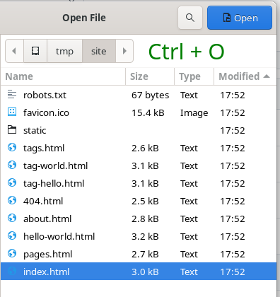
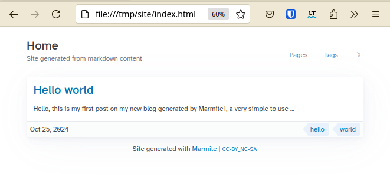
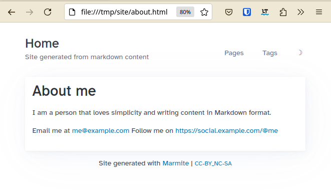
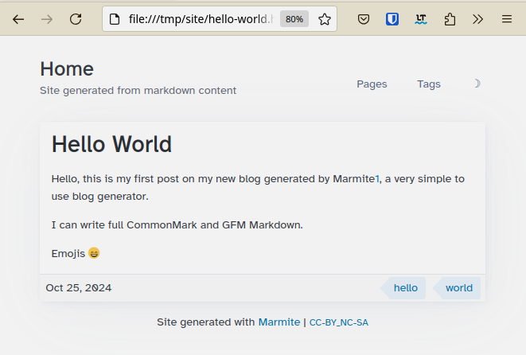
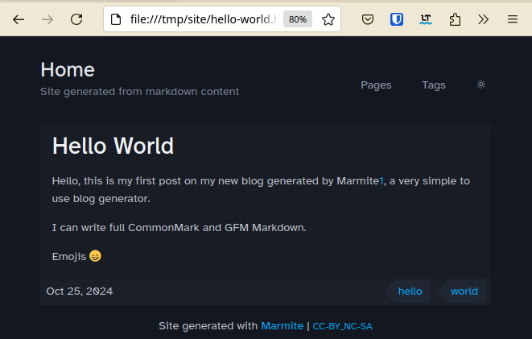
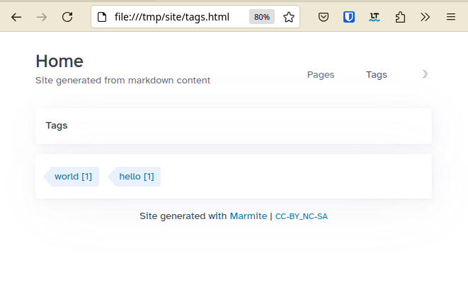
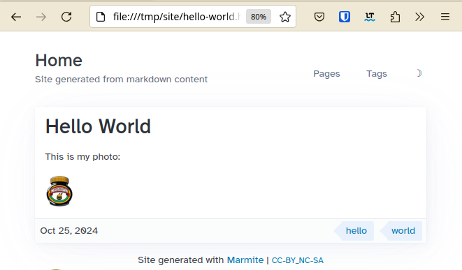
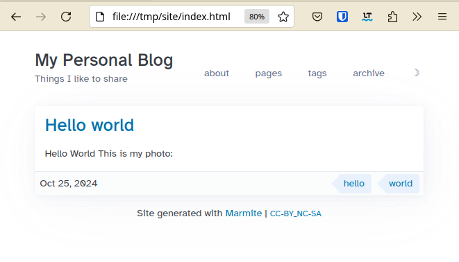
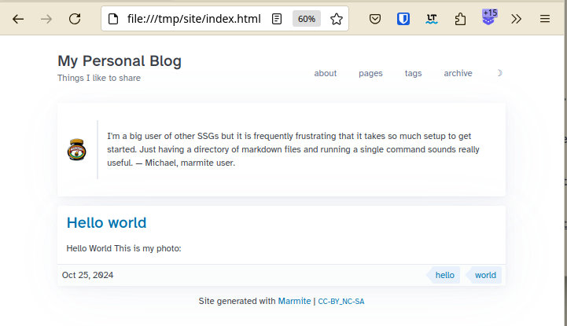
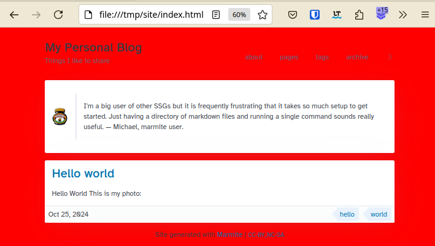

Getting started
Thursday, 24 October 2024 - ⧖ 13 min🗒️
- Quick Start
- Installation
- Starting your site project
- Adding content
- Using the CLI
- Generating the site
- Automatic re-generation when files changes
- Serving the site
- Media
- Organizing content
- Configuring
- Enabling Search
- Special pages and Fragments
- Colorschemes
- Layout Customization
- Project structure
- Looking for help
Learn how to create your blog with Marmite in minutes, you can start with zero-config and then customize gradually later.
Not convinced yet? Read why-to-use-marmite
Quick Start
Installation
Marmite is written in Rust 🦀 so if you have Rust in your system you can use cargo to install it.
cargo binstall marmite
or
cargo install marmite
Or download the pre-built binary from the releases
Or use docker
[!IMPORTANT] The directory containing your marmite project must be mapped to containers
/input
If running inside the directory use$PWD:/inputThe result will be generates in asitefolder inside the input dir.
Build
$ docker run -v $PWD:/input ghcr.io/rochacbruno/marmite
Site generated at: site/
Serve (just add port mapping and the --serve)
$ docker run -p 8000:8000 -v $PWD:/input ghcr.io/rochacbruno/marmite --serve
Starting your site project
For a simple website marmite doesn't require any specific directory structure, you just need a directory containing markdown files.
So start by creating a new directory for your content.
mkdir myblog
Adding content
On this example lets add an about page:
myblog/about.md
# About me
I am a person that loves simplicity and writing content in
Markdown format.
Email me at <me@example.com>
Follow me on <https://social.example.com/@me>
And a hello world post:
myblog/hello-world.md
---
date: 2024-10-25
tags: hello,world
---
# Hello World
Hello, this is my first post on my new blog generated
by Marmite[1], a very simple to use blog generator.
I can write full CommonMark and GFM Markdown.
Emojis :smile:
[1]: https://github.com/rochacbruno/marmite
The main difference from those 2 files is the fact that the first one about.md
doesn't have a date: metadata and since marmite can't detect its date, it considers
it a page.
The second, hello-world.md has a date: ... on its FrontMatter so
marmite considers it a chronological content, a post and will list it
on your blog front-page.
Learn more about Content Types
Using the CLI
Alternatively you can ask marmite to create the initial structute and config for you.
$ marmite myblog --init-site \
--name Mysite \
--tagline "My Articles and Notes" \
--colorscheme nord \
--toc true \
--enable-search true
And content using
$ marmite myblog --new "This is my new post title" -t "post,notes" -e
Generating the site
I'm a big user of other SSGs but it is frequently frustrating that it takes so much setup to get started.
Just having a directory of markdown files and running a single command sounds really useful.
— Michael, marmite user.
As said above, you just need to run marmite and point your content directory,
the usage is marmite [input_folder] [output_folder] [options]
So do:
$ marmite myblog site -v
INFO Config loaded from: defaults
INFO Generated site/index.html
INFO Generated site/pages.html
INFO Generated site/hello-world.html
INFO Generated site/about.html
INFO Generated site/404.html
INFO Generated site/tag-hello.html
INFO Generated site/tag-world.html
INFO Generated site/tags.html
INFO Generated site/static/*{css,js,fonts}
INFO Generated site/index.rss
INFO Generated site/{tag-*}.rss
INFO Generated site/{author-*}.rss
INFO Site generated at: site/
[!TIP] You can omit the INFO messaged by omiting the
-vor increase by adding up to 4-vvvv
And that's all! you have full working blog on the site folder, as marmite
generates a flat html website, you can open directly in your browser.
To see your site you can open the index.html in your browser, type Ctrl + O
on your keyboard and your browser will let you navigate to the folder and then
select the index.html file.

Then your site will look like:





Automatic re-generation when files changes
Instead of manually executing the command every time you change your markdown files you can tell marmite to detect the changes and regenerate.
marmite myblog site --watch
...
Watching for changes in folder: myblog
Serving the site
Marmite comes with a built-in server, this server is not meant to use in production, when publishing your site you are probably going to use a webserver such as Apache or Nginx, or most probably use a free static hosting service such as Github pages, Netlify or CLoudflare.
However, during the content writing you want to check how the website looks,
so the built-in server comes handy, just add --serve
marmite myblog site --watch --serve
...
Watching for changes in folder: myblog
Starting built-in HTTP server
Server started at http://localhost:8000/ - Type ^C to stop.
Open your browser and check http://localhost:8000/ to see your running blog
if you want to share your site with others in the same network, just
pass --bind "0.0.0.0:8000 and then share your local IP address.
Media
You gonna want some nice images in your blog posts, it is easy and simple to add it with marmite.
Create your myblog/media folder and include any image or video you want inside it
then in your markdown content just reference using the relative path.
myblog/hello-world.md
---
date: 2024-10-25
tags: hello,world
---
# Hello World
This is my photo:


[!NOTE]
You can create subfolders in the media directory, that is useful to organize files by topic or post.
Organizing content
For now all your markdown files are located on myblog/ root folder,
that is enough if you are going to stick with the defaults, but as soon you
start customizing templates and configuration you gonna need to organize your
contents.
marmite generated a flat html site, that means you can't have subpaths, your content will always be served from the top level.
But for better organization of your project YOU CAN OPTIONALLY move all your markdown
files to a subfolder called content/
myblog/
|_ content/
|_ about.md
|_ hello-world.md
|_ media/
|_ myphoto.png
Configuring
marmite is designed to be zero config to get started, just like you did above!
But you probably want to customize couple of things in your website to give your personal touch, change the look and feel, or even completely customize its front-end if you know some CSS/JS magic.
Adding your blog information
If found, marmite will load configuration from a file named marmite.yaml
located in the root of your input_folder, in this case:
myblog/marmite.yaml
name: My Personal Blog
tagline: Things I like to share
pagination: 10
menu:
- ["about", "about.html"]
- ["pages", "pages.html"]
- ["tags", "tags.html"]
- ["archive", "archive.html"]
Now regenerate your site with
marmite myblog site --watch --serve
And refresh your browser to take a look at the customizations.

You can see all available options on the Marmite example config
You can generate a config file with the default values for editing:
$ marmite myblog site --generate-config
Config generated at `myblog/marmite.yaml`
Configuring via CLI
You can also pass configuration variables directly to the CLI when building
$ marmite myblog site \
--name MySite \
--tagline "My articles and notes" \
--url "https://myblog.com" \
--pagination 20 \
--toc true \
--enable-search true \
--colorscheme dracula \
--language en \
--footer "- <strong>CopyLeft</strong> -"
Enabling Comments
Most of blogs will have a comment box to receive feedback from readers, marmite doesn't come with one as it is a static site and doesn't have the ability to handle dynamic data, instead, marmite allows you to plug external commenting system providers such as disqus or github.
myblog/_comments.md
##### Comments
<div id="#comment-box"></div>
<script> ... </script>
The content depends on which commenting system you choose and how it is configured.
Read more on Enabling Comments page to learn how to enable Gisqus, a commenting system based on Github discussions.
Enabling Search
Marmite can generate static search index as a JSON file
and then using Javascript library Fuse provide full text search for posts and pages.
To enable this feature add to your marmite.yaml
enable_search: true
search_title: Search
Special pages and Fragments
There are some contents that are considered special as those are not regular posts or pages, right now there are:
Global fragments
The Global fragments are written in dynamic markdown format and allows raw html and also allows Tera expressions as those are rendered with global context.
Click here to see an example.
full markdown
##### tags
{% for name, items in group(kind='tag') -%}
- [{{name}}](tag-{{name | slugify}}.html)
{% for item in items -%}
- [{{item.title}}]({{item.slug}}.html)
{% endfor %}
{% endfor %}
mixed html
# Hello
Markdown **here**
<!-- Mind the blank space between markdown and HTML blocks -->
<h3>Tags</h3>
<ul>
{%for tag, items in group(kind='tag') -%}
<li>
<a href="tag-{{tag}}.html">{{tag}}</a>
<ul>
{% for item in items %}
<li><a href="{{item.slug}}.html">{{item.title}}</li>
{% endfor %}
</ul>
</li>
{%- endfor %}
</ul>
- Hero -
_hero.md -
A banner that shows as the first content in your home page
Marmite will look for a file named_hero.mdwithin your content folder. - 404 -
_404.md -
The page that will show for Not Found error
Marmite will look for a file named_404.mdwithin your content folder.
if not found, marmite will generate a default. - Footer -
_footer.md -
The content of
_footer.mdwill be shown on the footer of base template this will override the contents ofmarmite.yamlfooter:field - Header -
_header.md -
The content of
_header.mdwill be shown on the header of base template this will replace the Logo, Name, Tagline and menu entirely. - Comments -
_comments.md -
The content of
_comments.mdwill be rendered at the end of each post page, If exits this will have precedence over theextra.commentsonmarmite.yaml - Announce -
_announce.md -
The content of
_announce.mdwill be rendered on the very top of the website, globally as a way to add alerts, annoucements and callouts.
Content Fragments
The content fragments are static Markdown format and allows raw HTML.
[!IMPORTANT]
Tera expressions are not rendered on these fragments because those are rendered before the global context is built.
- References -
_references.md -
This file will be appended to the end of every markdown file processed, so it is possible to use the references and footnotes globally. format
[name]: https://link - Markdown Footer -
_markdown_footer.md -
This file will be appended to the end of every markdown processed You can include anything inside it, this is useful to add custom callouts, messages, signatures to the end of contents.
- Markdown Header -
_markdown_header.md -
This file will be prepended to the top of every markdown processed You can include anything inside it, this is useful to add custom callouts, messages, signatures to the end of contents.

Colorschemes
Marmite comes with some colorschemes built-in, colorschemes are CSS style files that customizes colors, spacing etc.
if you use other applications such as text editors, terminals and web apps you probably are familiarized with the colorschemes available.
To choose a colorscheme add to marmite.yaml
extra:
colorscheme: gruvbox
The built-in options are catppuccin, clean, dracula, github, gruvbox, iceberg, monokai, nord, one, solarized, typewriter.
Click to select a colorscheme: ☽
To create a custom colorscheme drop a custom.css on your input folder (the same where marmite.yaml is located)
CLICK HERE to see an example colorscheme on custom.css
custom.css
/* Marmite Nord Theme */
/* picocss.com */
:root {
--pico-border-radius: 0;
}
.content-tags a:where(a:not([role=button])),
[role=link] {
--pico-color: revert;
}
[data-theme=light],
:root:not([data-theme=dark]) {
--pico-background-color: #ECEFF4;
--pico-card-background-color: #E5E9F0;
--pico-card-sectioning-background-color: var(--pico-background-color);
--pico-primary: #5E81AC;
--pico-primary-hover: #81A1C1;
--pico-color: #2E3440;
--pico-tag: #4C566A;
--pico-h1-color: var(--pico-primary);
--pico-code-background-color: var(--pico-background-color);
--pico-table-border-color: var(--pico-card-background-color);
--pico-color-azure-550: var(--pico-primary);
}
[data-theme=light] pre:has(> code.language-mermaid) {
background-color: var(--pico-card-background-color);
}
[data-theme=dark],
:root:not([data-theme=light]) {
--pico-background-color: #2E3440;
--pico-card-background-color: #3B4252;
--pico-card-sectioning-background-color: var(--pico-background-color);
--pico-primary: #81A1C1;
--pico-primary-hover: #88C0D0;
--pico-color: #D8DEE9;
--pico-tag: #4C566A;
--pico-h1-color: var(--pico-color);
--pico-code-background-color: var(--pico-background-color);
--pico-table-border-color: var(--pico-card-background-color);
--pico-color-azure-550: var(--pico-primary);
}
[data-theme=dark] pre:has(> code.language-mermaid) {
background-color: var(--pico-code-color);
}
[!NOTE]
Multiple colorschemes can also be added tostatic/colorschemes/{name}.cssand then enableextra.colorscheme_toggleon config.
Layout Customization
If you want to keep using the default theme but wants to customize little parts
of its CSS and add additional JS then you can do it with the easy mode
Easy mode
Custom CSS
Just create a new file myblog/custom.css and put any CSS you want inside it,
if you are customizing the default template take a look at PicoCSS docs.
Example:
myblog/custom.css
body {
background-color: red;
}

Customizing Content Width
The content container is optimized for blogs, if you want to change the
width just add to the custom.css
:root {
--pico-container-max-width: 100ch;
}
Custom JS
The same as above, just create a custom.js and add any Javascript,
notice that the custom.js file is loaded at the bottom of the html files.
myblog/custom.js
console.log("Hello from marmite");
Advanced mode
Choose this option if your intention is to fully customize the default theme or start a new theme from scratch.
Custom templates
To fully customize the templates you need a templates folder and add all the
required templates as described on Customizing Templates
If you don't want to create the templates manually, you can dump the embedded templates in your project folder.
marmite myblog site --init-templates
The above command will create a myblog/templates folder with all the required
templates and you can freely customize.
The templates are written in Tera.
Custom theme
Theme is generally the templates + Style, so in addition to custom templates you need all the static files.
If you wrote your templates from scratch then you are free to refer
to any static file you want, create a folder named static and put any
css, js, fonts etc inside it.
[!IMPORTANT] marmite generates flat html website, all static file url will be relative like
./static/style.css./static/fonts/font.woofetc.
If you don't want to create all static files by hand, but want to reuse the embedded theme, you can run.
marmite myblog site --start-theme
The above command will output the myblog/static folder and then you can
freely customize.
Project structure
With contents and a full customized theme your repository will look like:
myblog/
|_ content/ # Markdown content
| |_ _404.md
| |_ _hero.md
| |_ about.md
| |_ hello-world.md
| |_ media/ # Images, Videos, PDFs
| |_ myphoto.png
|_ templates/ # Tera HTML templates
| |_ *.html
|_ static/ # Theme static files
| |_ *.{css,js,ttf,ico}
|_ marmite.yaml # Config
|_ custom.css # Optional css
|_ custom.js # Optional JS
Looking for help
You can ask Marmite related questions or suggest features on Discussions page
[!NOTE]
We would love to know if you publish a site made with marmite or created a custom theme, please share on the Discussions page.
Please consider giving a ☆ on Marmite Github repository, that helps a lot!